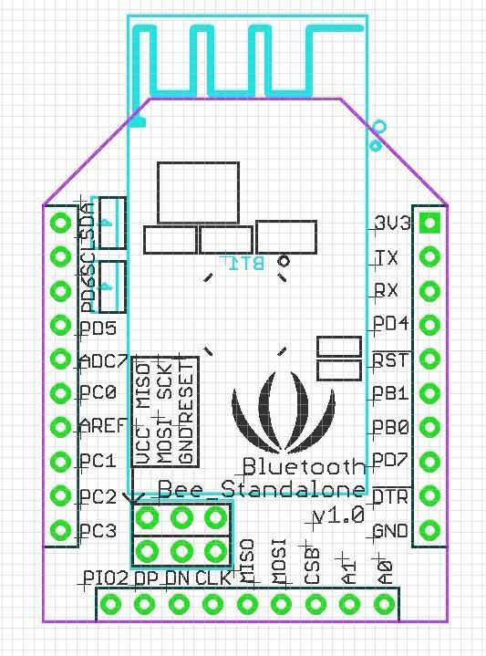
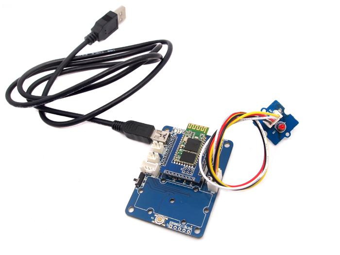
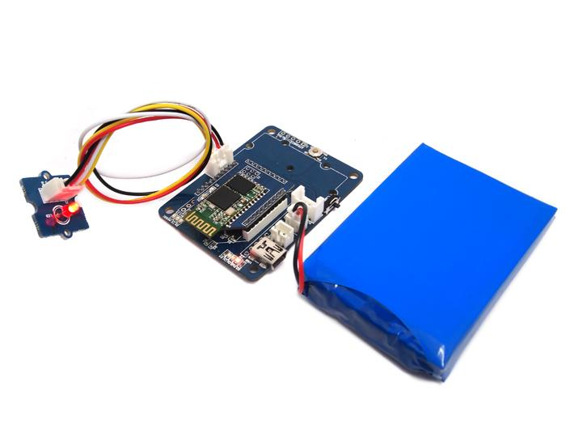

Save that extra Arduino you have lying around for another project, this two-for-one device has the Arduino built-in. Bluetooth Bee with Arduino is an enhanced version of the Bluetooth Bee. We added an onboard ATMEGA168 to it to make it a full-featured Arduino while maintaining the same footprint and instruction set as the Bluetooth Bee. Plus, it still allows you to stack it on XBee Carrier, XBee® Shield, and UartSBee for expansion or reprogramming.
To use BlueTooth bee-Standalone more convenient and make it more usefull,you'd better downloadBlueTooth bee-Standalone Eagle files.
Bottom-view:

PD4 - PD7 = Arduino IDE digital pins 4 - 7 (5,6 PWM)
PB0 , PB1 = Arduino IDE digital pins 8 , 9 (9 PWM)
PC0 - PC3 = Arduino IDE analog pins 0 - 3 (Note PC2 Disconnects the Bluetooth via a rising edge)
Bluetooth Bee-Standalone board is of 24mm x 36mm size.
Example : Use Bluetooth Bee-Standalone to control a Grove-LED with XBee carrier.
Connect Grove-Led and Bluetooth Bee-Standalone module to XBee carrier like this.

Write a program by Arduino-IDE to read informations from the Bluetooth Softserial port and identify to shut or turn on the LED.
/*
BluetoothBee Demo Code - Flowcontrol Based Implementation
2010,2011 Copyright (c) Seeed Technology Inc. All right reserved.
Author: Visweswara R Modify:Joinj
This demo code is free software; you can redistribute it and/or
modify it under the terms of the GNU Lesser General Public
License as published by the Free Software Foundation; either
version 2.1 of the License, or (at your option) any later version.
This library is distributed in the hope that it will be useful,
but WITHOUT ANY WARRANTY; without even the implied warranty of
MERCHANTABILITY or FITNESS FOR A PARTICULAR PURPOSE. See the GNU
Lesser General Public License for more details.
You should have received a copy of the GNU Lesser General Public
License along with this library; if not, write to the Free Software
Foundation, Inc., 51 Franklin St, Fifth Floor, Boston, MA 02110-1301 USA
For more details about the product please check http://www.seeedstudio.com/depot/
*/
/* Upload this sketch to Seeeduino and press reset*/
#include <NewSoftSerial.h> //Software Serial Port
#define RxD 2
#define TxD 3
#define DEBUG_ENABLED 1
NewSoftSerial blueToothSerial(RxD,TxD);
void setup()
{
pinMode(RxD, INPUT);
pinMode(TxD, OUTPUT);
pinMode(5,OUTPUT);
setupBlueToothConnection();
}
void loop()
{
unsigned char control;
unsigned char temp;
while(temp!='4') {
temp=blueToothSerial.read();
}
Serial.println("You are connected");
blueToothSerial.print("You are connected"); //You can write you BT communication logic here
while(1) {
temp=blueToothSerial.read();
switch(temp) {
case 'O':{while(temp!='N') {temp=blueToothSerial.read();} digitalWrite(5,HIGH);break;}
case 'S':{while(temp!='H') {temp=blueToothSerial.read();} digitalWrite(5,LOW);break;}
default:break;
}
}
}
void setupBlueToothConnection()
{
blueToothSerial.begin(38400); //Set BluetoothBee BaudRate to default baud rate 38400
delay(1000);
sendBlueToothCommand("\r\n+STWMOD=0\r\n");
sendBlueToothCommand("\r\n+STNA=SeeedBluetooth-st\r\n");
sendBlueToothCommand("\r\n+STAUTO=0\r\n");
sendBlueToothCommand("\r\n+STOAUT=1\r\n");
sendBlueToothCommand("\r\n +STPIN=0000\r\n");
delay(2000); // This delay is required.
sendBlueToothCommand("\r\n+INQ=1\r\n");
delay(2000); // This delay is required.
}
//Checks if the response "OK" is received
void CheckOK()
{
char a,b;
while(1)
{
if(blueToothSerial.available())
{
a = blueToothSerial.read();
if('O' == a)
{
// Wait for next character K. available() is required in some cases, as K is not immediately available.
while(blueToothSerial.available())
{
b = blueToothSerial.read();
break;
}
if('K' == b)
{
break;
}
}
}
}
while( (a = blueToothSerial.read()) != -1)
{
//Wait until all other response chars are received
}
}
void sendBlueToothCommand(char command[])
{
blueToothSerial.print(command);
CheckOK();
}
Connect the XBee carrier to computer with USB-cable and uploading the program to ATMEGA168 on the Bluetooth Bee-Standalone.
Remove the USB-cable form XBee carrier and connect the 3.7-Voltage battery to XBee carrier like this.
Use another Bluetooth Bee connect to the Bluetooth Bee-Standalone.How to connect? You can refer to Bluetooth Bee.When you are connected,you can control the LED by another Bluetooth Bee.The LED will work when you send "ON" to Bluetooth Bee-Standalone and it will be off when you send "SH"(short for SHUT).

Please list your questions here:
If you have questions or other better design ideas, you can go to our forum or wish to discuss.
| Revision | Descriptions | Release |
|---|---|---|
| v1.0 | Initial public release | May 6, 2012 |
Bug Tracker is the place you can publish any bugs you think you might have found during use. Please write down what you have to say, your answers will help us improve our products.